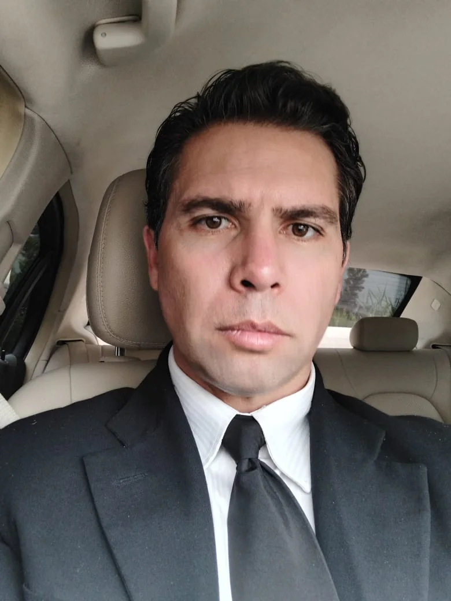

MS Transportes Executivo
Conheça o motorista
Atendimento pessoal, discrição e cuidado em cada percurso.
Solicitar orçamento ↗
Atendimento com responsabilidade
VOCÊ NÃO CONTRATA APENAS UM TRAJETO. CONTA COM ALGUÉM EM QUEM CONFIAR.
Meu compromisso é oferecer um atendimento cordial, discreto e profissional, respeitando seu tempo e cuidando de cada detalhe da viagem.
“Seu compromisso é chegar bem. O meu é cuidar do caminho.”
Marcos Simeoni · Motorista particular
Para informações adicionais sobre experiência profissional, tempo de atuação e qualificações, entre em contato diretamente.
← Voltar ao início